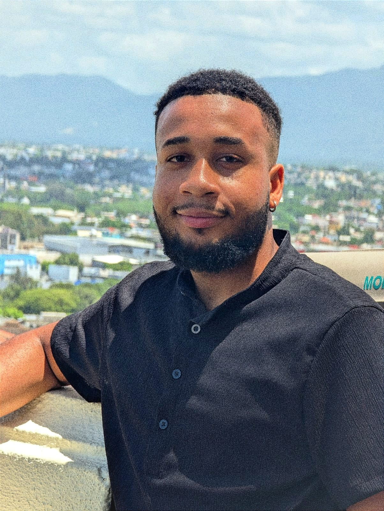

Odanis Alejandro Soto Arias

Profiler
I consider myself a responsible, creative and dynamic person,
I have the ability to adapt and work as a team, under
pressure, with initiative to solve problems effectively,
I can meet the highest standards of the company,
achieving both my objectives and theirs.
Academic training
Instituto Politécnico Salesiano Hainamosa.
Bachelor/technician. Aug 2017 - Jun 2021
Instituto Tecnológico de Las Américas. (ITLA)
Technologist in Software Development. - final-year student.
Courses
-
Telephone representative. (Cap. Carso) Jul 2021.
-
Selenium WebDriver with Python (Udemy).
-
Digital transformation and technological evolution. Mar 2021.
-
Data Analysis | SQL,Tableau,Power BI & Excel | Real Projects (Udemy).
-
Master in SQL Server (Udemy).
Work experience
Chat Support.
Filer and liquidator of medical accounts. (assistant).
-
Amov International Teleservices.
Equipment activation agent.
Labor References
-
Elvin Garcia (809-366-4789)
ConCiencia Domionicana.
-
Nataly Cabrera (849-856-8550)
Amov International Teleservices.
Others
© 2025 Odanis Soto